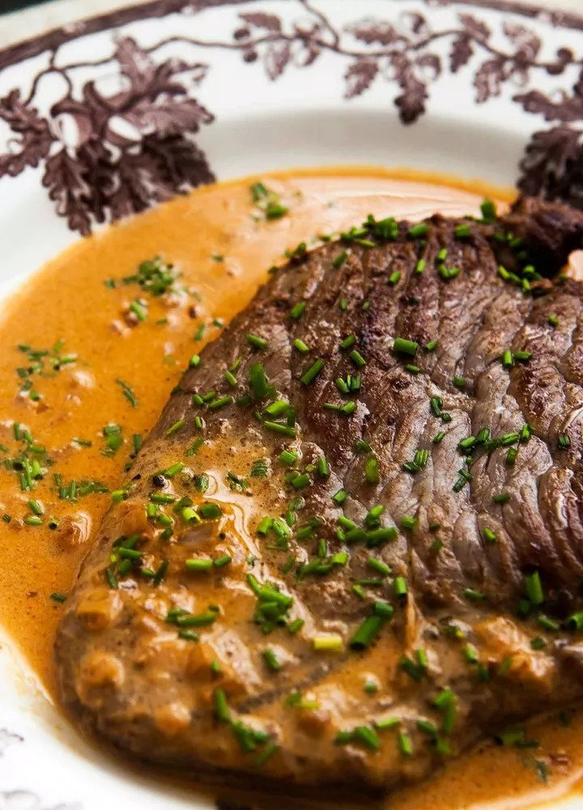

Odin's Steak Diane!

My Favourite Steak Diane Recipe
This steak is pan-fried using the juices as a base for the "Diane" sauce. Along with mustard, Worcestershire sauce, and cream; this sauce will have you licking the plate clean!
Ingredients:
- 4 (6-ounce) center cut beef tenderloin steaks or another cut of your choice
- Salt
- ½ cup beef broth
- 4 teaspoons Worcestershire sauce
- 2 teaspoons dijon mustard
- 2 teaspoons tomato paste
- 2 tablespoons butter
- ½ cup finely minced shallots
- 4 tablespoons cognac or brandy
- ⅓ cup heavy cream
- Freshly ground black pepper
- 2 tablespoons chives, finely chopped
Directions:
- Salt steak and let sit at room temp for 20 minutes.
- Mix broth, Worcestershire sauce, mustard, tomato paste and set aside.
- Sear steaks in butter by melting over med-high heat. Pat the steaks dry with paper towel before increasing heat to high and searing the meat for 1-4 minutes depending on thickness. Flip and repeat.
- Move steaks to cutting board and tent with foil. Saute shallots in the pan for 2 minutes on med-high heat, stir once.
- Deglaze pan with cognac by increasing heat and cooking until the cognac is almost evaporated.
- Stir in the broth mixture and bring to a boil. Cook until thickened (2-3 minutes) before mixing in the cream for another 2 minutes.
- Serve steak with a drizzle of the sauce along with freshly ground black pepper and chives to garnish.